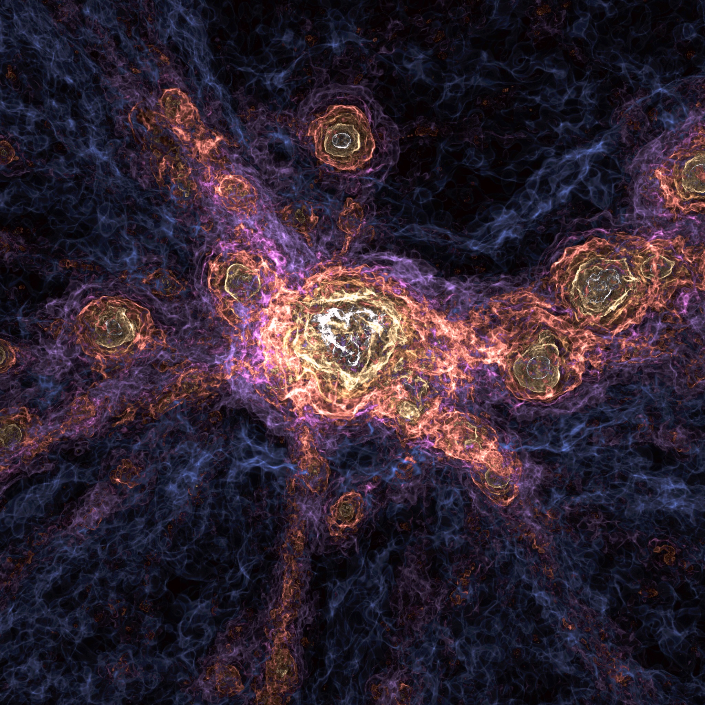
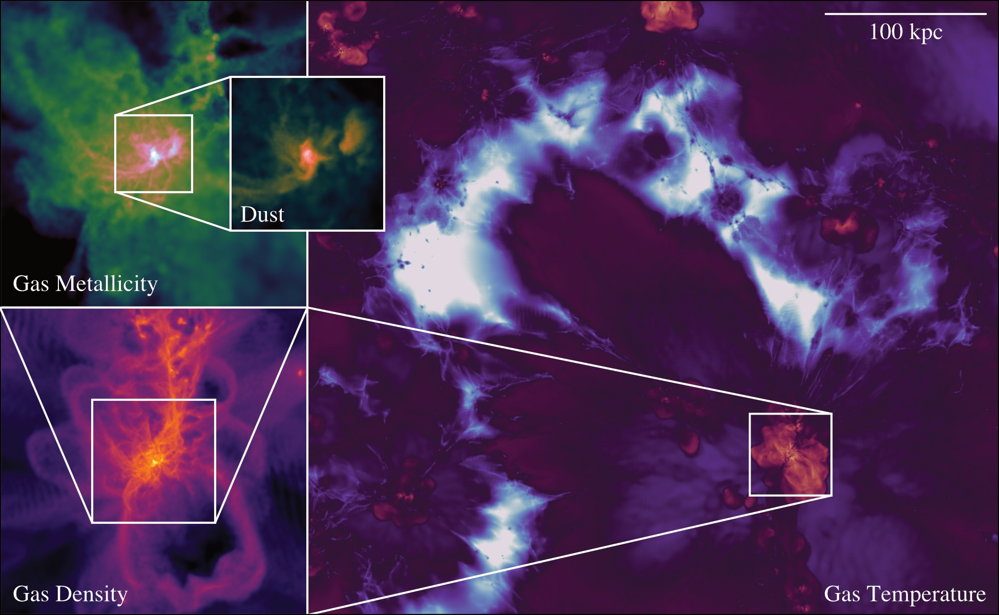

Highlights
See below for a few highlights from my recent work. I regularly post things to my twitter profile (@JBorrow) if you want an even more up-to-date list! This page usually contains interesting visualisations and tid-bits; for an overview of my published research work please see publications.
FLAMINGO

This image shows a 40 Mpc square region from the FLAMINGO flagship 2.8 Gpc simulation. At the center, there lies the most massive galaxy cluster in the volume. Each colour represents a different isodensity contour.
THESAN-HR Flagship

This image shows a zoom in on a very early dwarf galaxy (at z=7) in the flagship THESAN-HR simulations. In this volume, we zoom in on the hot gas halo to show the complex gas structure, followed by zooming into the 1 kpc, dust, gas disk.
Visualising the Early Universe
A galaxy protocluster at redshift z=5.5 (the very early universe). The inner regions of the maps show the temperature of the gas, the middle regions show the photon density in the gas, and the outer regions showing metallicity. The object is extracted from the THESAN simulation of reionization.
This image is featured in the Aesthetic Computation gallery.
Mountains from Cosmological Simulations
A mountainous structure created from a SWIFT cosmological simulation
(25 Mpc volume) with swiftsimio and matplotlib. The visualisation
shows the whole volume, with the height and colour of the peaks
corresponding to the local projected density. Uses the red colour map
from my library swiftascmaps
A Pipeline for Galaxy Formation
Part of my current work with the SWIFT and EAGLE teams is leading the
analysis pipeline. Here, we use
our custom analysis pipeline
along with the VELOCIraptor halo finder and observational data to
immediately produce publication-quality figures from every simulation.
Not only is this convenient, but it allows us to extract insights
in a maintainable and reproducible way; instead of using a single
script to produce a figure, the
velociraptor-python
library produces everything from simple metadata.
Visualising the Cosmic Web
As the lead of the SWIFT and EAGLE analysis pipeline, it was important
to me that we had in-house solutions for visualising data. Many out of
the box solutions exist, but we frequently have complex needs. Because of
this, I created swiftsimio, now published in JOSS, to visualise our
SPH simulation data. The image above has featured in the
international press,
and was created using swiftsimio.
Views on the EAGLE Simulation
The EAGLE simulation has many properties that we can take a view on; the picture above combines the gas density, gas temperature, dark matter density, a shock finder, and the gas metallicity all in one.